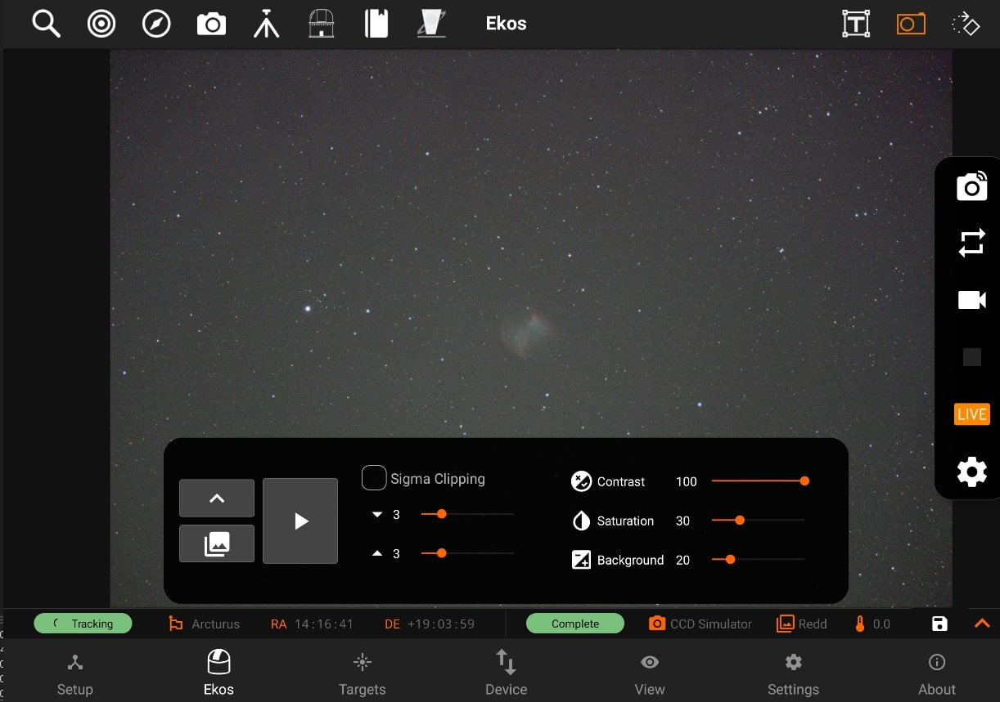
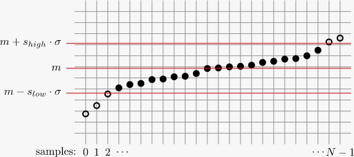
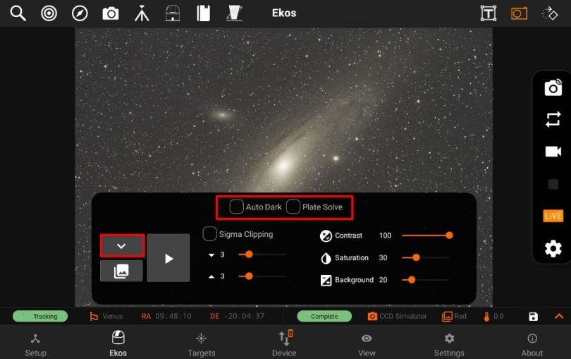
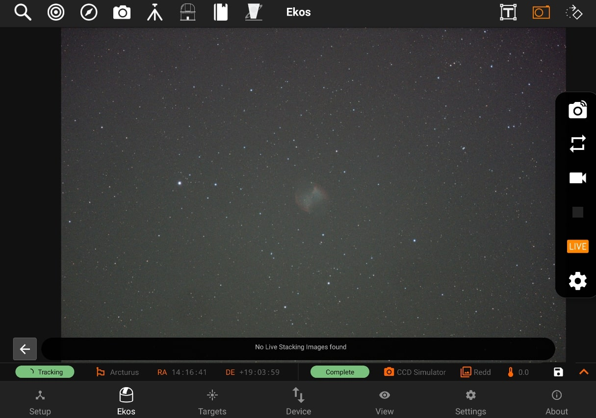
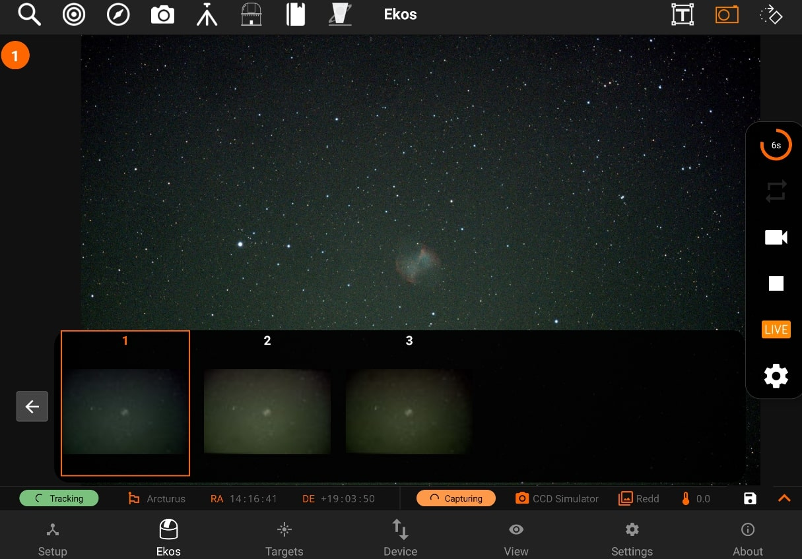

Live Stacking
StellarMate App includes support for Live Stacking. Live stacking works by combining data from multiple images to increase the Signal to Noise ratio. This would reduce the overall noise in the image and increase the contrast of the objects in the frame. Faint objects like galaxies and nebulae should pop up only after a few images are combined. As you continue to live-stack, the graininess of the image would be substantially reduced resulting in a crisp and smooth image.
The livestacked images are only as good as the data. Therefore, for Live-stacking to operate successfully, the following conditions must be met:
- The image must be well-focused.
- The image must contain sufficient stars for the algorithm to work. The livestacking algorithm inspects stars in each captured frame and performs the necessary star-alignment to compensate for any offsets or rotations among the captured images.
- For exposures above 30 seconds, you must have guiding activated. Star trails tend to form with most consumer-grade mounts after usually 30 seconds. The maximum unguided exposures should be less than 30 seconds, or as appropriate given the tracking performance of the mount. Good Polar alignment significantly helps the livestacking performance.
Livestacking can be toggled directly or during the execution of a sequence job in the Capture module. When no sequence queue is running, the livestacker would trigger a capture loop using the primary camera in the Quick Controls Settings. For example, if the exposure duration was set to 5 seconds, then a 5-second capture loop is automatically started by the livestacker. The capture loop would run indefinitely until stopped by the user.
Alternatively, if a sequence queue is already running, then toggling the liverstacker would make it wait for the next frame to arrive before processing it.
In either case, the first frame is used to extract the reference stars information, and the actual stacking begins starting with the second frame.
To toggle live stacking options, tap the LIVE button in the Camera Quick Controls. Tap the Play button to start the process. Livestacker utilizes a median stacking algorithm and automatic background extraction followed by contrast adjustments to bring out the details.

Sigma clipping helps with noise reduction during the stacking process. The mean and standard deviation are calculated from the first three captures. Subsequent captures are then sigma-clipped to remove any outliers outside the envelope of acceptable ranges around the mean.
The diagram below shows how values outside the envelope are masked and not included in the stacking process. You can control the upper and lower limits of this envelope by adjusting the slower and supper (default is set to 3) parameters in the app.
The contrast and saturation controls do not affect the stacking process itself, but apply some cosmetic adjustments to the final image to improve its quality. Some non-nebulae objects might benefit from the automatic background subtraction controlled by the Background parameter. Increasing this value would attempt to compensate for sky glow in the background, but might also result in loss of detail.

https://pixinsight.com/doc/tools/ImageIntegration/ImageIntegration.html

Auto Dark: Subtract dark frames when applicable.
Plate Solve: Solve each frame and align frames accordingly (beta).
When Livestacked images are received, they are displayed in the main view with a thumbnail carousel at the bottom. Each image is numbered sequentially. To ensure proper performance, only the last 10 captured images are available in the carousel. To view a specific image, simply tap its thumbnail in the carousel. When the livestacking is restarted again, all images would be cleared.


All livestacked images are saved as JPG in StellarMate Pictures directory, where they can be accessed later via the Gallery, StellarMate network share, or FTP.
To save an image in the tablet/phone storage, tab the Disk icon in the camera’s info bar.